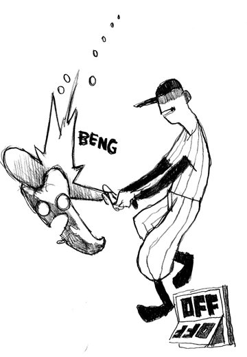

artigo 1
seção 1
seção 2
logotipo
OFF é um jogo de RPG em francês lançado em 2008 pela equipe belga Unproductive Fun Time, composta por Martin Georis ("Mortis Ghost") e Alias Conrad Coldwood . Ele conquistou um culto de seguidores por sua história, personagens e atmosfera, especialmente após sua tradução oficialmente sancionada pelos fãs para o inglês em 2011. É sobre uma entidade humanóide enigmática conhecida como Batter, que é descrita como estando em uma "missão sagrada" para " purificar " o mundo de Off . O Batter viaja por quatro zonas bizarras do mundo, revelando mais sobre o mundo conforme o jogo avança.
artigo 1
seção 1
seção 2
artigo 2
seção 1